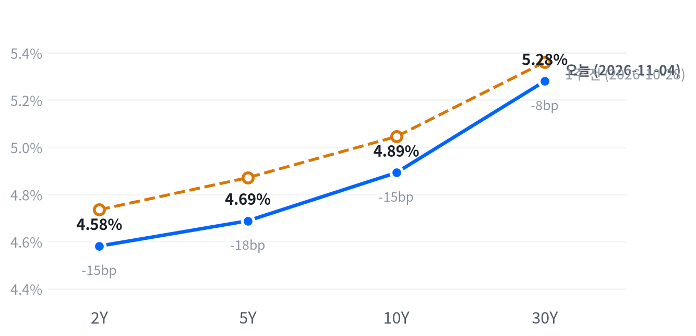

민주당이 상·하원을 모두 가져가고 트럼프 대통령이 결과를 받아들이겠다고 밝히자 다우가 3% 넘게 올랐고, 유가는 이란 전쟁 종식 기대에 8% 넘게 급락했다. 같은 선거에서 데이터센터 반대 표심이 확인되자 AI 설비 지출을 받는 전력·냉각·메모리 공급사는 급락했고 지출하는 하이퍼스케일러는 올랐다.
공급사의 하루 낙폭은 작동 시점이 먼 규제 위험에 대한 과잉 반응으로 보지만, 하이퍼스케일러 주주가 지출 축소를 반기는 재평가일 수도 있다. 11월 5일 루멘텀 실적과 6일 10월 고용보고서에서 다음 근거를 확인한다.
중간선거에서 민주당이 상·하원을 모두 가져갔고, 트럼프 대통령이 결과를 받아들이고 민주당과 일하겠다고 밝히면서 시장은 불확실성 해소를 샀다. 다우는 3.03% 올라 2025년 4월 이후 가장 큰 하루 상승을 기록했다는 보도가 나왔다. 같은 선거에서 데이터센터 모라토리엄을 내건 후보들이 텍사스·조지아·오하이오 주지사에 당선되자 AI 설비 지출을 받는 쪽이 급락했다. 버티브·GE 버노바 평균은 S&P보다 12.68%p 약했고, 지출하는 쪽인 마이크로소프트·아마존·애플은 크게 올랐다.
공급사의 하루 낙폭은 규제 위험의 크기보다 불확실성 할인이 한꺼번에 반영된 결과로 본다. 주 정부의 모라토리엄은 입법이 필요하고 새 의회는 1월에야 소집되며, 진행 중인 프로젝트와 수주잔고는 바로 줄지 않는다. 보도는 하이퍼스케일러 상승을 AI 지출 규율 기대로, 공급사 하락을 건설 규제 우려로 설명했다. 옵션·포지셔닝이나 설비투자 가이던스 변경 같은 가격 기반 기대는 구하지 못해, 시장 기대와 우리 해석의 차이는 아직 잴 수 없다. 가장 강한 반론은 사는 쪽이 같은 날 올랐다는 사실이다. 하이퍼스케일러 주주가 지출 축소를 반기기 시작했다면 공급사 할인은 규제가 아니라 고객의 지출 계획 변화에 대한 기대이고, 실적이 좋아도 쉽게 되돌려지지 않는다. 금리에서는 유가 급락과 재정 적자 억제 기대가 장기물을 끌어내렸지만, 2년물은 3.3bp 내리는 데 그쳐 정책금리 기대는 여전히 고용 지표에 묶여 있다.
3개월 시계로 보면 이날 전력망·데이터센터 설비와 반도체·AI 하드웨어 업종의 상대수익률이 악화됐고, 초대형 플랫폼과 관리의료·병원, 클린에너지는 정책 기대를 타고 상대 강세를 얻었다. 사는 쪽과 파는 쪽이 반대로 움직인 날이라 AI를 하나의 테마로 묶으면 서로 반대인 두 효과가 섞인다. 공급사 할인이 되돌려질지에 대해서는 새 아이디어를 내지 않고 판단을 보류한다. 지켜볼 대상은 버티브·GE 버노바 동일가중 묶음과 S&P의 상대 성과다. 두 종목의 하루 움직임이 평소 4세션 차이보다 크고 호가·대차·옵션 자료가 없어 실행 비용은 따질 수 없다. 방산은 국방 지출 억제 기대에 약해져, 방산 업종의 상대수익률 회복은 더 늦어질 수 있다.
이 판단은 11월 4일 종가 대비 11월 10일 종가로 잰다. 버티브·GE 버노바 단순평균 누적 등락률에서 S&P500 누적 등락률을 뺀 값이 +6.45%p 이상이면 하루 과잉 반응이라는 판단을 뒷받침하고, 같은 폭 이상 뒤처지면 판단은 약해지며 데이터센터 전력·설비 테마의 재평가를 우선 설명으로 본다. 그 사이면 결론을 내지 않는다. 두 종목 가운데 한 곳이라도 그 사이 실적·인수합병·가이던스 변경을 발표해도 결론을 내지 않는다. 첫 근거는 11월 5일 장 마감 뒤 루멘텀 실적에서 나오고, 11월 6일 08:30(ET) 10월 고용보고서가 금리 판단을 다시 연다.
| 지수 | 종가 | 등락 | 기준일 |
|---|---|---|---|
| 닛케이225 | 63,081.86 | -0.33% | 11월 2일 |
| 항셍 | 23,525.97 | +0.57% | 11월 3일 |
| 상해종합 | 3,608.10 | -0.82% | 11월 3일 |
| DAX | 25,864.62 | -0.45% | 11월 3일 |
| FTSE100 | 10,829.21 | +1.79% | 11월 4일 |
| 유로스톡스50 | 6,144.56 | -0.51% | 11월 3일 |
| VIX | 16.61 | -4.22p | 11월 4일 |
닛케이는 들어온 마지막 종가인 11월 2일 값, 항셍·상해종합·DAX·유로스톡스50은 11월 3일 값이고, FTSE100과 VIX는 11월 4일 값이다. VIX 등락은 포인트다.
미국은 아시아와 엇갈렸다. 아시아 세 지수는 평균 0.19% 내렸고 지역 안에서도 갈려, 항셍은 올랐지만 닛케이와 상해종합은 내렸다. 유럽은 미국과 같은 방향이었지만 지역 안에서는 나뉘었다. 11월 4일 장을 마친 FTSE100만 오르고, 마지막 값이 11월 3일인 DAX와 유로스톡스50은 내렸다. 아시아와 대륙 유럽의 마지막 종가는 선거 결과가 나오기 전 값이다.
선물은 개표가 진행되던 11월 3일 22:00(ET)에 저점을 찍고 밤새 되돌렸다. S&P 선물(ES)은 그때 7,490에서 11월 4일 09:00(ET) 약 7,693 고점까지 올랐다. 나스닥 선물(NQ)은 같은 22:00 저점 뒤 05:30(ET)에 고점을 찍었다. 트럼프 대통령이 결과를 받아들이겠다고 말한 뒤 선물이 반등했다는 보도가 나왔다. 현물은 S&P +0.88%, 나스닥 +1.06%, 러셀2000 +1.56%의 갭으로 올라 출발했다.
세 지수 모두 하루 범위의 중간에서 끝나, 저점권도 고점권도 아니었다.
저점권·고점권 경계는 최근 2,256거래일의 일간 종가 위치 이력으로 다시 잰 기준이다.
선거 결과가 업종을 골랐다. 경기소비재·금융·커뮤니케이션서비스가 크게 올랐고, 유가 급락에 에너지가, 전력 설비주 급락에 산업재가 내렸다. 장 마감 뒤에는 코히런트가 매출이 1년 전보다 50% 늘어 컨센서스를 넘었고 시간외에서 3~4% 올랐다는 보도가 나왔다. 퀄컴은 메모리 가격 상승이 스마트폰 수요를 깎아 가이던스가 기대에 못 미쳤고, 시간외에서 6% 내렸다는 보도가 나왔다. 시간외 가격은 정규장 종가와 다르다.
출처: CNBC, Benzinga, GuruFocus
| 지수 | 종가 | 등락률 |
|---|---|---|
| 다우존스 | 53,356.12 | +3.03% |
| S&P500 가치주 | 243.30 | +2.09% |
| 러셀2000 | 2,856.95 | +1.58% |
| S&P500 | 7,688.62 | +1.58% |
| 나스닥 | 25,736.51 | +1.44% |
| S&P500 성장주 | 136.25 | +1.27% |
| 섹터 | 등락률 |
|---|---|
| 경기소비재 | +4.26% |
| 금융 | +3.51% |
| 커뮤니케이션서비스 | +3.47% |
| 필수소비재 | +3.36% |
| 부동산 | +3.32% |
| 헬스케어 | +3.06% |
| 소재 | +2.49% |
| 유틸리티 | +0.44% |
| 기술 | -0.01% |
| 산업재 | -1.09% |
| 에너지 | -4.74% |
선거 결과에 주식은 넓게 올랐다. S&P500은 1.58% 오른 7,689로, 최근 2년(504거래일) 가운데 이보다 높았던 날이 37일뿐인 자리로 돌아왔다. 다우는 3.03% 오른 53,356, 나스닥은 1.44% 오른 25,737, 러셀2000은 1.58% 오른 2,857이다. 그중 S&P와 러셀2000은 평소 하루 움직임을 크게 넘었다. 11개 업종 가운데 일곱이 1% 넘게 올랐지만, 에너지와 산업재는 내렸고 기술은 제자리였다.
상승을 만든 것은 선거 결과의 두 갈래다. 하나는 불확실성 해소다. 트럼프 대통령의 결과 수용 발언으로 선거 불복과 개표 지연에 대한 우려가 걷혔고, JP모건자산운용의 데이비드 켈리는 분할 정부가 성장과 물가를 늦추고 불확실성을 줄인다고 봤다. 다른 하나는 정책 테마다. ACA 보조금 연장과 지출 삭감 완화 기대에 센틴(+12.6%)과 HCA(+10.3%)가 뛰었고, 국방 지출 억제 기대에 록히드마틴은 6.9% 내렸다는 보도가 나왔다. 가치주가 2.09% 올라 성장주(1.27%)를 앞선 것도 이 두 갈래가 기술주 밖으로 퍼졌다는 뜻이다.
장중 궤적은 지수마다 달랐다. S&P는 개장가가 그날의 저점이었고 오후까지 오름폭을 키웠다. 나스닥은 10:00(ET) 26,049 고점에서 꺾여 남은 시간 내내 밀렸고, 엔비디아도 개장 직후가 고점이었다. 같은 10:00에 ISM 서비스업 지수가 예상을 밑돌았지만, 이를 나스닥 고점과 연결한 보도는 찾지 못했다. 장중 내내 반도체·AI 공급사에서 다우 종목과 경기민감주·방어주로 자금이 옮겨 갔다는 보도가 나왔다.
지수 상승은 경기소비재·커뮤니케이션서비스·금융·헬스케어 네 업종이 만들었다. 추정 기여도로 경기소비재가 +0.58%p, 커뮤니케이션서비스가 +0.45%p, 금융이 +0.36%p, 헬스케어가 +0.28%p를 보탰다. 에너지(-0.13%p)와 산업재(-0.07%p)가 이를 깎았고 기술은 0.00%p로 지수에 아무것도 보태지 못했다. 업종 합으로 설명되지 않는 부분은 -0.02%p다.
추정 기여도는 업종 비중을 직접 받지 않아, 최근 252거래일 지수·업종 수익률로 추정한 비중을 곱한 값이다. 소재와 부동산은 비중을 추정할 수 없어 빠졌다.
상승은 넓었지만 기술 업종 안에서는 정반대 움직임이 상쇄됐다. 기술이 제자리였던 것은 마이크로소프트·애플 상승과 반도체 하락이 맞선 결과로 본다. 경기소비재 상승에는 아마존이, 커뮤니케이션서비스 상승에는 알파벳이 6% 넘게 올랐다는 보도가 겹쳐 있다.
출처: CNBC, TheStreet
| 만기 | 종가(11월 4일) | 전일比(bp) | 1주 전(10월 28일) | 주간 변화(bp) |
|---|---|---|---|---|
| 2Y | 4.581% | -3.3 | 4.735% | -15.4 |
| 5Y | 4.688% | -5.5 | 4.871% | -18.3 |
| 10Y | 4.892% | -5.8 | 5.045% | -15.3 |
| 30Y | 5.280% | -4.4 | 5.361% | -8.1 |
유가 급락과 선거 결과에 국채금리가 만기 전반에서 내렸다. 2년물은 3.3bp 내린 4.581%, 10년물은 5.8bp 내린 4.892%, 30년물은 4.4bp 내린 5.280%다. 10년물은 그래도 최근 2년(504거래일) 가운데 이보다 높았던 날이 38일뿐이고, 30년물은 41일뿐인 고점권에 머문다.

네이버 국채 종가, 전 만기 11월 4일 기준. 1주 전(10월 28일)보다 2년물은 15.4bp, 5년물은 18.3bp, 10년물은 15.3bp, 30년물은 8.1bp 내렸다.
하루로는 10년물이 2년물보다 더 내린 불 플래트닝이다. 2s10s는 31.1bp로 11월 3일(33.6bp)보다 좁아져 전날의 가팔라짐을 그대로 되돌렸고, 5s30s는 59.2bp다. 한 주로는 2년물부터 10년물까지 비슷한 폭으로 내리고 30년물만 덜 내려, 초장기 구간이 가팔라진 불 스티프닝이다. 2년물은 10월 30일과 같은 4.581%로 돌아왔다.
이날 하락의 상당 부분은 인플레 보상 축소에서 나온 것으로 본다. FRED 기준 11월 4일 5년 기대인플레는 9bp 내린 2.30%, 10년 기대인플레는 4bp 내린 2.26%였다. 5년 뒤 5년 기대인플레는 오히려 1bp 올라 2.22%다. 유가 충격에 민감한 앞쪽 만기의 인플레 보상이 더 많이 줄어, 유가 하락이 금리를 끌어내렸다는 설명과 맞는다. 네이버 명목금리와 출처·시각이 달라 정확한 분해는 아니다. 명목금리를 실질금리와 기대인플레로 나눈 같은 날짜 자료는 11월 3일 것이 마지막이고, 그날 10년물 4bp 상승은 실질금리 3bp와 기대인플레 1bp로 실질금리가 이끌었다.
장기물에는 재정 경로도 작용했다. 월가가 적자 지출 축소에 주목한다는 JP모건 트레이더들의 진단과 분할 정부에서는 적자를 늘리기 어렵다는 BondBloc 조앤 비앙코의 분석이 나왔다. 재정 억제 기대는 기간프리미엄을 낮추는 쪽으로 작용하지만, 11월 4일 실질금리와 기간프리미엄 추정치(마지막 값 10월 30일 0.91%)가 아직 없어 유가와 재정 가운데 어느 쪽이 더 컸는지는 이날 자료로 가르지 못한다. 2년물이 덜 내린 것은 12월 인상 확률 보도가 거의 그대로였던 것과 같은 방향이다.
신용시장은 11월 3일 값까지만 있다. 하이일드 스프레드는 3.40%로 하루 3bp 좁아졌지만 5거래일 사이로는 22bp 넓어졌고, 투자등급 스프레드는 0.93%다.
5년 뒤 5년 명목금리 5.16%, 실질 2.95%(11월 3일 기준). 기대인플레 쪽 수치와의 교차검증은 할 수 없었고, 위험 프리미엄이 섞인 값이다.
출처: CNBC
| 통화쌍 | 종가 | 등락률 | 기준일 |
|---|---|---|---|
| DXY | 101.507 | -0.35% | 11월 4일 |
| USD/KRW | 1,340.95 | -0.24% | 11월 4일 |
| USD/JPY | 158.440 | -0.18% | 11월 4일 |
| EUR/USD | 1.1233 | +0.35% | 11월 4일 |
달러는 선거 다음 날 약해졌다. 달러지수는 0.35% 내린 101.507로 평소와 비슷한 크기로 움직였고, 유로/달러는 1.1233으로 올랐다. 원/달러는 0.24% 내린 1,341원으로 최근 2년(504거래일) 가운데 이보다 낮았던 날이 19일뿐인 원화 강세권에 있다. 엔/달러는 0.18% 내린 158.44엔으로 거의 움직이지 않았다.
달러 약세는 정책금리 기대보다 미국 장기금리 하락과 위험선호 회복이 이끈 것으로 본다. 12월 인상 확률 보도가 거의 그대로인 가운데 2년물보다 10년물이 더 내렸고, VIX는 4.22p 급락했다. 인상 베팅이 거의 움직이지 않았는데 달러지수가 한 달 저점까지 내렸다는 분석도 같은 방향이다. 2년물과 FedWatch 확률이 거의 움직이지 않아, 정책금리 차이로는 이날 달러 약세를 설명하기 어렵다. 엔화는 미국 금리가 내렸는데도 거의 오르지 않았고, 일본 금리 자료가 없어 금리차로 이를 설명할 수는 없다.
환율은 뉴욕 16:00 ET 가격, 전 거래일 같은 시각 대비다.
출처: ActionForex
| 품목 | 종가 | 등락률 |
|---|---|---|
| WTI | $88.70 | -8.12% |
| Brent | $95.21 | -8.63% |
| 천연가스 | $2.952 | +1.65% |
| 금 | $4,074.40 | +3.64% |
유가는 이란 전쟁 종식 기대에 하루 만에 8% 넘게 급락했다. WTI는 8.12% 내린 88.70달러, 브렌트는 8.63% 내린 95.21달러로 평소 하루 움직임을 크게 넘었다. WTI는 급락 뒤에도 최근 두 해 가격대의 높은 쪽 22% 안에 있다. 금은 3.64% 오른 4,074달러로 4,000달러 위로 돌아왔고, 천연가스는 1.65% 오른 2.952달러다.
유가 급락은 선거 결과가 이란 전쟁의 정치 비용을 키웠다는 해석에서 나왔다. 밴스 부통령이 소셜미디어에서 공화당 패배를 이란 전쟁 탓으로 돌리자 전쟁을 끝내라는 압력이 커진다는 기대가 퍼졌고, 앤디 리포는 트럼프 대통령이 협상에 나설 가능성이 높아졌다고 봤다. 트럼프 대통령은 FT에 이란을 즉시 공격할 계획이 없다고 말했다. WTI는 새벽 96.87달러 고점에서 12:30(ET) 87.13달러까지 밀린 뒤 조금 되돌렸고, 이번 주 누적 낙폭은 14%를 넘었다는 보도가 나왔다. 공급 차질이 실제로 줄었다는 자료는 아직 없어, 이날 하락은 수요 악화가 아니라 지정학 위험 프리미엄의 축소로 판단한다.
금은 선거 결과와 달러 약세에 4,000달러를 되찾았다는 해석이 나왔고, 13:00(ET) 고점 근처에서 끝났다. 명목금리와 달러가 함께 내린 날이지만 11월 4일 실질금리는 아직 나오지 않아, 실질금리 하락이 금을 밀어 올렸는지는 확인하지 못한다. 이날 상승은 금리보다 달러 약세와 선거 결과 쪽 재료가 더 컸다고 본다. 브렌트와 WTI의 가격 차는 6.51달러인데, 표의 WTI는 12월물, 브렌트는 1월물이라 가격 차에는 만기 차이가 들어 있다.
최근 60거래일 동안 열 개 자산의 움직임에서 가장 큰 공통 요인은 전체의 42.4%를 설명하고, 이 요인을 이끄는 것은 주식이다. 이 요인과 함께 움직이는 자산군은 직전 60거래일 구간의 금리에서 원자재로 바뀐 상태가 이어졌다.
원자재·환율은 뉴욕 16:00 ET 가격, 전 거래일 같은 시각 대비다. 결제가와 다를 수 있다. WTI 하락폭은 최근 60거래일 평균 하루 변동의 3.11배, 금 상승폭은 2.85배다.
출처: CNBC, TradingKey, FXStreet
마이크로소프트(+6.68%)는 초대형 플랫폼의 상대 강세를 이끈 종목이다. 하이퍼스케일러가 선거 뒤 AI 지출 규율 기대와 불확실성 감소에 올랐다는 해석이 나왔고, 대형 AI 주도주로 자금이 되돌아왔다는 분석도 나왔다. 장중 사상 최고가를 다시 썼다는 보도가 있었다.
애플(+5.31%)은 대규모 AI 설비 지출을 피해 온 종목이라는 점에서 같은 흐름을 탔다. D램 원가 부담과 관세 압박이 누그러지고 관세 환급 기대가 붙었다는 해석이 나왔고, 시가총액에서 엔비디아를 다시 앞섰다는 보도가 나왔다.
아마존(+6.12%)은 민주당 의회가 잉여현금흐름을 깎아 온 AI 지출을 억제할 것이라는 기대에 올랐다는 해석이 나왔다. 장중에는 8% 안팎까지 올랐다는 보도가 있었다.
엔비디아(-3.17%)·마이크론(-7.00%)·마벨(-7.08%)은 반도체·AI 하드웨어 관련주의 약세를 키운 종목들이다. 민주당 의회와 주 정부 모라토리엄 아래 데이터센터 건설이 늦어질 수 있다는 우려가 보도의 공통 설명이었고, 엔비디아는 규제에 따른 둔화 우려로 하락 종목에 꼽혔다. 전날 장 마감 뒤 나온 AMD의 강한 실적도 이 매도를 막지 못했다는 보도가 나왔다.
샌디스크(-7.91%)·델(-8.82%)·시게이트(-8.13%)·슈퍼마이크로(-5.70%)·웨스턴디지털(-6.77%)은 서버·저장장치 쪽에서 같은 매도를 받은 종목들이다. 선거 결과와 데이터센터 반발이 함께 작용했다는 보도가 나왔다. 슈퍼마이크로는 분기 실적이 크게 좋았는데도 마진 우려에 밀렸고, 샌디스크에는 11월 2일 폭스 어드바이저스의 투자의견 하향이 겹쳐 있다.
전력망 관련주의 낙폭은 더 컸다. 버티브(-12.89%)와 GE 버노바(-9.30%)가 급락했고, 키뱅크는 텍사스 주지사 당선인의 모라토리엄 공약을 이유로 비스트라의 투자의견을 낮췄다. 골드만삭스는 텍사스가 데이터센터 용량의 약 25%를 차지한다고 추정한다. 새 의회가 1월에야 소집되고 법안에 대통령 서명이나 거부권 무효화가 필요해 실제 건설 지연 효과는 크지 않을 수 있다는 분석가 견해도 나왔다. 버티브 고유의 이날 재료는 확인되지 않았다.
출처: CNBC, Quartz, Benzinga, FX Leaders, Yahoo Finance, TIKR, Invezz, TipRanks, 24/7 Wall St., Motley Fool, StockTitan
미국 경기 국면은 성장 보합·물가 교착인 교착을 10월 14일부터 16영업일째 이어 간다. 이날 나온 ISM 서비스업 지수와 ADP 민간고용은 국면 점수에 들어가는 지표가 아니어서, 성장 점수 0.016과 물가 점수 0.003은 그대로 어느 쪽으로도 기울지 않았다. 국면을 움직일 다음 자료는 11월 6일 10월 고용과 10일 10월 소비자물가다.
네 축의 판정은 전일과 같다. ISM 서비스업은 54.5로 예상(54.8)을 밑돌았지만 가격지수가 73.0에 머물러, 수요 둔화 조짐과 끈적한 물가가 함께 나왔다. 고용축 +0.173 · 생산·활동축 -0.376 · 소비축 +0.249 · 물가축 +0.003
| 지표 | Actual | Forecast | Previous | 발표일 | 컨센 대비 | 직전 대비 | 추세 |
|---|---|---|---|---|---|---|---|
| 구인건수(9월) | 7,523K | 7,150K | 7,190K | 2026-11-03 | 상회▲ | 개선 | 보합 · 3개월 평균 7,435K → 7,349K |
| 신규 실업수당 청구 | 194,000 | — | 195,000 | 2026-10-29 (10월 24일 주간) | 개선 | 개선(미미) · 4주 평균 200K → 197K | |
| 신규 청구 4주 평균 | 196,750 | — | 198,000 | 2026-10-29 (10월 24일 주간) | 개선 | 개선(완만) · 4주 평균 203K → 198K | |
| 계속 실업수당 청구 | 1,701,000 | — | 1,722,000 | 2026-10-29 (10월 17일 주간) | 개선 | 개선(완만) · 4주 평균 1,723K → 1,710K | |
| 비농업 고용 변화(9월) | +29K | — | +133K | 2026-09 기준월 | 악화 | 악화(미미) · 3개월 평균 +81K → +51K | |
| 실업률(9월) | 4.2% | — | 4.1% | 2026-09 기준월 | 악화 | 개선(미미) · 3개월 평균 4.27% → 4.13% | |
| 평균시간당임금 MoM(9월) | +0.13% | — | +0.32% | 2026-09 기준월 | 악화 | 악화(미미) · 3개월 평균 +0.21% → +0.19% | |
| ADP 민간고용(10월) | +86K | +75K | +86K | 2026-11-04 | 상회▲ | — | — |
| 지표 | Actual | Forecast | Previous | 발표일 | 컨센 대비 | 직전 대비 | 추세 |
|---|---|---|---|---|---|---|---|
| 산업생산 MoM(9월) | +0.66% | — | +0.06% | 2026-09 기준월 | 개선 | 보합 · 3개월 평균 +0.40% → +0.32% | |
| 내구재주문 MoM(9월 확정) | +1.91% | — | +0.14% | 2026-11-03 | 개선 | 악화(미미) · 3개월 평균 +1.70% → +0.98% | |
| 신규주택판매(9월) | 676K | — | 680K | 2026-09 기준월 | 악화 | 개선(미미) · 3개월 평균 652K → 668K | |
| 기존주택판매(9월) | 399만 | — | 393만 | 2026-09 기준월 | 개선 | 악화(뚜렷) · 3개월 평균 4,120K → 3,993K | |
| 실질GDP QoQ 연율(3분기 속보) | +3.4% | — | +2.2% | 2026년 3분기 | 개선 | — | |
| ISM 제조업 PMI(10월) | 55.5 | 54.6 | 54.5 | 2026-11-02 | 상회▲ | — | — |
| ISM 서비스업 PMI(10월) | 54.5 | 54.8 | 54.9 | 2026-11-04 | 하회▼ | — | — |
| 지표 | Actual | Forecast | Previous | 발표일 | 컨센 대비 | 직전 대비 | 추세 |
|---|---|---|---|---|---|---|---|
| 소매판매 MoM(9월) | +0.77% | — | +1.29% | 2026-09 기준월 | 악화 | 보합 · 3개월 평균 +0.61% → +0.55% | |
| 미시간대 소비자심리(9월 확정) | 48.1 | — | 51.7 | 2026-09 기준월 | 악화 | 개선(완만) · 3개월 평균 48.0 → 51.7 |
| 지표 | Actual | Forecast | Previous | 발표일 | 컨센 대비 | 직전 대비 | 추세 |
|---|---|---|---|---|---|---|---|
| CPI YoY(9월) | 3.72% | — | 3.35% | 2026-09 기준월 | 상승 | 둔화(미미) · 3개월 평균 3.80% → 3.46% | |
| CPI MoM(9월) | +0.65% | — | +0.40% | 2026-09 기준월 | 상승 | 재가속(완만) · 3개월 평균 +0.23% → +0.37% | |
| Core CPI YoY(9월) | 2.57% | — | 2.45% | 2026-09 기준월 | 상승 | 둔화(미미) · 3개월 평균 2.71% → 2.49% | |
| Core CPI MoM(9월) | +0.33% | — | +0.29% | 2026-09 기준월 | 상승 | 재가속(완만) · 3개월 평균 +0.19% → +0.28% | |
| PPI 최종수요 MoM(9월) | +1.34% | — | +0.47% | 2026-09 기준월 | 상승 | 재가속(완만) · 3개월 평균 +0.49% → +0.66% | |
| PCE 물가 YoY(9월) | 3.65% | — | 3.44% | 2026-09 기준월 | 상승 | 교착 · 3개월 평균 3.62% → 3.49% | |
| Core PCE YoY(9월) | 3.12% | — | 3.03% | 2026-09 기준월 | 상승 | 교착 · 3개월 평균 3.10% → 3.05% | |
| 미시간대 1년 기대인플레(9월 확정) | 4.6% | — | 4.0% | 2026-09 기준월 | 상승 | 둔화(완만) · 3개월 평균 4.70% → 4.27% |
직전 대비는 Actual을 Previous와 비교한 것이고, 추세는 최근 3개월 평균을 그 앞 3개월 평균과 비교한 것입니다(주간 실업수당 청구는 4주 평균끼리). 추세의 세기는 그 지표가 평소 움직이는 폭에 견준 크기이고, 작은 변화는 보합으로 봅니다. 분기 지표인 GDP는 두 비교가 같은 숫자를 보므로 직전 대비만 싣습니다.
연준의 다음 금리 변경은 12월 9일 FOMC의 추가 25bp 인상이라는 판단을 유지한다. CME FedWatch 기준 12월 인상 확률은 11월 4일 장 전·초반 79.2%(전날 정산 77.4%)와 약 81%로 보도됐고, 장 마감 뒤 값은 찾지 못했다. 유가가 급락한 날에도 하루 변화가 15%p에 못 미쳐 시점은 그대로 12월에 둔다.
12월 9일 FOMC 전까지 연준 성명이나 의장 발언이 추가 인상 여지를 닫으면 12월 인상 중심 판단을 수정한다. 11월 6일 10월 고용에서 실업률이 3월 이후 범위(4.1~4.3%) 위로 올라서면 인상 우위 판단을 철회한다.
자산별 전달 방향은 전일과 같다.
출처: Vantage Markets, FXStreet, CNBC
| 지수 | 순위(5거래일 전) | 1개월 | 3개월 | SPY 대비 3개월 | 대비 변화 | 12-1 모멘텀 | 변동성 | 1일 VaR 95% | 베타 | 50/200일선 | 52주 고점 대비 |
|---|---|---|---|---|---|---|---|---|---|---|---|
| 에너지 XLE | 2(2) | -0.4% | +9.9% | +9.8%p | -2.5%p | +48.8% | 23.5% | 2.3% | -0.87 | 아래/위 | -9.3% |
| 소프트웨어 IGV | 5(1) | -6.8% | +4.2% | +4.1%p | -11.4%p | -3.9% | 33.0% | 3.4% | 1.72 | 아래/위 | -8.1% |
| 경기소비재 XLY | 6(7) | +9.5% | +3.8% | +3.8%p | +5.3%p | -7.0% | 18.2% | 1.6% | 1.11 | 위/위 | -1.1% |
| 금융 XLF | 8(15) | +9.6% | +2.8% | +2.8%p | +8.3%p | +5.2% | 15.1% | 1.3% | 0.61 | 위/위 | 0.0% |
| 주택건설 XHB | 11(23) | +10.4% | -0.6% | -0.7%p | +9.5%p | -4.8% | 27.4% | 2.4% | 0.92 | 위/위 | -10.5% |
| 초대형주 Top 50 XLG | 12(4) | -4.1% | -0.8% | -0.8%p | -2.4%p | +8.9% | 13.3% | 1.3% | 1.21 | 아래/위 | -4.2% |
| 은행 KBE | 15(21) | +6.1% | -2.8% | -2.8%p | +6.6%p | +15.1% | 16.4% | 1.4% | 0.38 | 위/위 | -4.8% |
| 소형주 IWM | 16(16) | +0.9% | -4.5% | -4.5%p | +3.5%p | +15.8% | 13.6% | 1.6% | 0.93 | 위/위 | -6.7% |
| 소형 성장 IWO | 18(20) | -1.1% | -7.1% | -7.1%p | +1.8%p | +10.3% | 17.5% | 2.1% | 1.24 | 아래/아래 | -9.7% |
| 산업재 XLI | 20(22) | -1.2% | -8.0% | -8.1%p | +1.6%p | +12.4% | 13.8% | 1.5% | 0.64 | 아래/아래 | -8.9% |
| 모멘텀 팩터 MTUM | 21(11) | -15.9% | -11.3% | -11.3%p | -8.7%p | +28.8% | 24.9% | 3.2% | 1.41 | 아래/아래 | -20.8% |
| 반도체·AI 하드웨어 SMH | 22(6) | -20.3% | -11.8% | -11.8%p | -12.7%p | +73.3% | 37.2% | 4.1% | 2.16 | 아래/아래 | -24.6% |
| 전력망 GRID | 23(18) | -12.0% | -12.4% | -12.4%p | -4.1%p | +18.0% | 25.0% | 3.1% | 1.28 | 아래/아래 | -18.3% |
| 금속·광업 XME | 24(13) | -11.5% | -13.2% | -13.2%p | -8.3%p | +14.6% | 32.2% | 3.7% | 1.61 | 아래/아래 | -27.8% |
| 방산 ITA | 25(25) | +2.2% | -14.8% | -14.8%p | +2.3%p | -2.9% | 19.4% | 2.1% | 0.44 | 아래/아래 | -15.8% |
| 지수 | 순위(5거래일 전) | 1개월 | 3개월 | SPY 대비 3개월 | 대비 변화 | 12-1 모멘텀 | 변동성 | 1일 VaR 95% | 베타 | 50/200일선 | 52주 고점 대비 |
|---|---|---|---|---|---|---|---|---|---|---|---|
| 헬스케어 XLV | 1(3) | +13.5% | +15.8% | +15.8%p | +9.8%p | +17.6% | 18.2% | 1.4% | 0.28 | 위/위 | 0.0% |
| 필수소비재 XLP | 3(8) | +12.4% | +8.7% | +8.7%p | +10.8%p | +11.1% | 18.2% | 1.5% | -0.15 | 위/위 | 0.0% |
| 배당 SCHD | 4(5) | +10.2% | +8.3% | +8.3%p | +6.8%p | +28.5% | 12.0% | 1.0% | 0.09 | 위/위 | 0.0% |
| 저변동성 SPLV | 7(14) | +9.7% | +3.5% | +3.5%p | +9.1%p | +4.2% | 11.8% | 1.0% | 0.07 | 위/위 | 0.0% |
| 유틸리티 XLU | 9(19) | +6.0% | +1.3% | +1.2%p | +9.8%p | -5.0% | 15.6% | 1.4% | 0.09 | 위/아래 | -6.7% |
| 퀄리티 팩터 QUAL | 10(9) | +0.2% | +1.1% | +1.1%p | +3.4%p | +16.6% | 9.6% | 0.8% | 0.78 | 위/위 | -0.3% |
| 지수 | 순위(5거래일 전) | 1개월 | 3개월 | SPY 대비 3개월 | 대비 변화 | 12-1 모멘텀 | 변동성 | 1일 VaR 95% | 베타 | 50/200일선 | 52주 고점 대비 |
|---|---|---|---|---|---|---|---|---|---|---|---|
| 일본 EWJ | 13(10) | -5.5% | -1.4% | -1.4%p | +1.2%p | +23.9% | 16.0% | 1.5% | 1.13 | 아래/위 | -5.5% |
| 유럽 VGK | 14(17) | +4.2% | -1.5% | -1.5%p | +6.7%p | +11.3% | 13.0% | 1.2% | 0.77 | 위/위 | -2.9% |
| 신흥국 EEM | 17(12) | -9.7% | -5.2% | -5.2%p | -0.8%p | +25.1% | 20.8% | 2.7% | 1.37 | 아래/아래 | -13.5% |
| 중국 MCHI | 19(24) | -1.3% | -7.8% | -7.8%p | +8.2%p | -16.3% | 17.3% | 1.8% | 0.74 | 아래/아래 | -19.2% |
| 지수 | 순위(5거래일 전) | 1개월 | 3개월 | SPY 대비 3개월 | 대비 변화 | 12-1 모멘텀 | 변동성 | 1일 VaR 95% | 베타 | 50/200일선 | 52주 고점 대비 |
|---|---|---|---|---|---|---|---|---|---|---|---|
| S&P 500 SPY | – | -1.6% | 0.0% | 0.0%p | – | +15.2% | 10.6% | 1.1% | 1.00 | 위/위 | -1.6% |
| S&P 500 동일가중 RSP | – | +5.2% | +2.6% | +2.5%p | – | +15.1% | 10.6% | 0.8% | 0.62 | 위/위 | 0.0% |
| 나스닥 100 QQQ | – | -8.9% | -3.1% | -3.1%p | – | +20.8% | 18.1% | 2.0% | 1.52 | 아래/위 | -8.9% |
가격 기준 시장 국면은 10월 30일부터 횡보로 4거래일째이고, 직전 국면은 강세였다. 이날은 강세 조건을 1거래일째 채웠고, 이 상태가 3거래일 이어지면 국면이 강세로 바뀐다. SPY는 766.81로 50일선(766.45)을 겨우 넘었고 200일선(727.12) 위에 있으며, 52주 고점 대비 -1.58%다.
10월 28일과 비교하면 반도체·AI 하드웨어와 전력망 업종의 3개월 상대수익률이 악화됐다. 반도체·AI 하드웨어의 SPY 대비 3개월 상대수익률은 +0.95%p에서 -11.78%p로 12.73%p 줄었고 순위는 6위에서 22위로 내려왔다. 전력망은 -8.29%p에서 -12.43%p로 4.14%p 더 나빠져 18위에서 23위가 됐다. 반대로 헬스케어는 +5.94%p에서 +15.75%p로 9.81%p 늘어 3위에서 1위에 올랐다. 이날 데이터센터 공급망 급락과 관리의료·병원 강세가 한 주 동안 벌어진 이 차이를 더 키웠다.
위험 신호는 엇갈린다. 유동성 방향은 긴축이고, 하이일드 스프레드는 11월 3일 3.40%로 5거래일 사이 22bp 넓어졌다. 반면 VIX는 16.61로 중간 수준까지 내려왔고, NFCI는 평균보다 느슨해 금융 여건 전체가 조여졌다고 보기는 어렵다.
버티브·GE 버노바의 선거 다음 날 급락을 일정상 먼 규제 위험에 대한 하루 과잉 반응으로 보는 판단(11월 4일)을 새로 세운다. 출발점은 11월 4일 종가이고, 이날 두 종목 단순평균은 S&P보다 12.68%p 약했다. 확인 기준은 11월 4일 종가 대비 11월 10일 종가다. 버티브·GE 버노바 단순평균 누적 등락률에서 S&P500 누적 등락률을 뺀 값이 +6.45%p 이상이면 하루 과잉 반응이라는 판단을 뒷받침하고, 같은 폭 이상 뒤처지면 판단은 약해지며 데이터센터 전력·설비 테마의 재평가를 우선 설명으로 본다. 그 사이면 결론을 내지 않는다. 기준값은 최근 20개 4세션 구간의 같은 차이 절댓값 평균이고, 두 종목과 지수의 변동성 차이는 보정하지 않았다. 두 종목 가운데 한 곳이라도 그 사이 실적·인수합병·가이던스 변경을 발표하면 결론을 내지 않고, 루멘텀 실적과 10월 고용보고서가 같은 구간에 있다.
애플의 메모리 원가 경고가 미국 메모리주 반등을 이어 가게 한다는 판단(11월 3일)은 첫 세션에 크게 약해졌다. 11월 3일 종가 대비 마이크론·웨스턴디지털·시게이트 단순평균은 7.30% 내리고 나스닥은 1.44% 올라, 차이가 -8.739%p로 약화 기준(-5.07%p)을 이미 넘었다. 결론은 원래대로 11월 6일 종가에서 낸다. 이날 하락은 애플의 원가 경고나 키옥시아의 정점 우려가 아니라 데이터센터 공급망 전체에 걸린 정치 리스크에서 나와, 메모리 고유의 설명을 가르는 데는 쓰기 어렵다. 장 마감 뒤 퀄컴이 메모리 가격 상승으로 스마트폰 수요가 줄었다고 밝힌 것은, 애플에 이어 메모리 강세가 고객의 마진과 수요를 깎는 둘째 사례다.
대형 AI 플랫폼의 수익화 의문이 소형주로 상대 성과를 옮긴다는 판단(10월 29일)은 기준에 가까워졌지만 근거는 약해졌다. 10월 29일 종가 대비 러셀2000과 나스닥의 누적 차이는 +1.632%p로 기준(+1.65%p)에 0.02%p 못 미치고, 2년물 누적 변화는 -7.5bp로 제외 기준(±25bp) 안이다. 이날 마이크로소프트·아마존·애플이 크게 올라, 수익화 의문이 대형 AI 플랫폼을 누른다는 설명과 반대로 움직였다. 결론은 11월 5일 종가에서 낸다.
연준 인사들의 인상 발언에도 내린 2년물을 주식 매도가 만든 안전자산 수요로 보는 판단(10월 30일)은 이날도 결론을 낼 수 없었다. 10월 30일 종가 대비 S&P는 1.432% 올라 기준(0.85%)을 넘었지만, 2년물은 10월 30일과 같아 누적 변화가 0.0bp로 기준(5.7bp)에 못 미친다. 이날 주식은 오르고 2년물은 내렸지만 12월 인상 확률 보도가 거의 그대로여서, 두 설명 어느 쪽도 뒷받침하지 못했다. 결론은 11월 5일 종가에서 낸다.
유가 하락이 장기물의 인플레 보상만 낮추고 2년물은 연준의 인상 기조에 묶여 커브가 평탄해진다는 판단(11월 2일)은 이날 방향은 같았지만 폭이 모자랐다. WTI(16:00 ET)는 88.70달러로 조건인 11월 2일 종가 95.87달러 아래로 내려왔고, 10년물이 2년물보다 2.5bp 더 내렸다. 그러나 전날의 가팔라짐을 되돌린 데 그쳐 11월 2일 종가 대비 2s10s 누적 변화는 0.0bp로 기준(±4.4bp) 안이다. 10년물 하락에는 재정 적자 억제 기대도 겹쳐 유가만의 효과로 떼어 내기 어렵다. 결론은 11월 5일 종가에서 내고, 그때 유가가 95.87달러 위에 있으면 결론을 내지 않는다.
FOMC 뒤 2년물이 크게 오르는 날에도 AI 인프라가 시장보다 2%p 넘게 뒤처지지 않는다는 판단(10월 27일)은 이날 확인할 기회가 없었다. 2년물이 3.3bp 내려 대상 세션 기준(+5bp 이상)에 들지 않았고, 코히런트가 장 마감 뒤 실적을 내 원래 규칙으로도 빠지는 세션이다. 참고로 마벨·코히런트·루멘텀·버티브 평균은 S&P보다 10.030%p 약했지만, 보도된 하락 이유는 금리가 아니라 데이터센터 정치 리스크다. 측정은 11월 6일 16:00(ET)까지 이어지고, 루멘텀 실적 세션은 뺀다.
FOMC 뒤 장기물 상승을 인플레 보상 확대로 보는 판단(10월 28일)은 측정일인 11월 5일이 오지 않았다. 출발점은 FRED 10월 28일 값으로 10년물 명목금리 5.05%, 기대인플레 2.38%다. FRED 10년물은 11월 3일 4.95%, 10년 기대인플레는 11월 4일 2.26%로 모두 출발점보다 낮다. 11월 5일 FRED 10년물이 5.10% 이상이어야 상승 조건(+5bp)에 닿아, 결론을 내지 못할 가능성이 크다.
어떤 판단도 실행한 포지션이 없어 성과는 잴 수 없다. 11월 5일 종가에서 세 판단의 결론이 나오고, 같은 날 장 마감 뒤 루멘텀 실적과 11월 6일 08:30(ET) 10월 고용보고서를 지나 나머지 판단의 측정이 이어진다.
시세는 Yahoo Finance와 네이버 국채 종가, 경제지표는 FRED와 각 발표 기관(BLS·BEA·Census 등), 그 밖의 내용은 본문에 밝힌 출처에서 가져왔다. 이 보고서는 투자 자문이 아니며 특정 자산의 매수·매도를 권유하지 않는다. 투자 판단과 그 결과에 대한 책임은 전적으로 투자자 본인에게 있다.